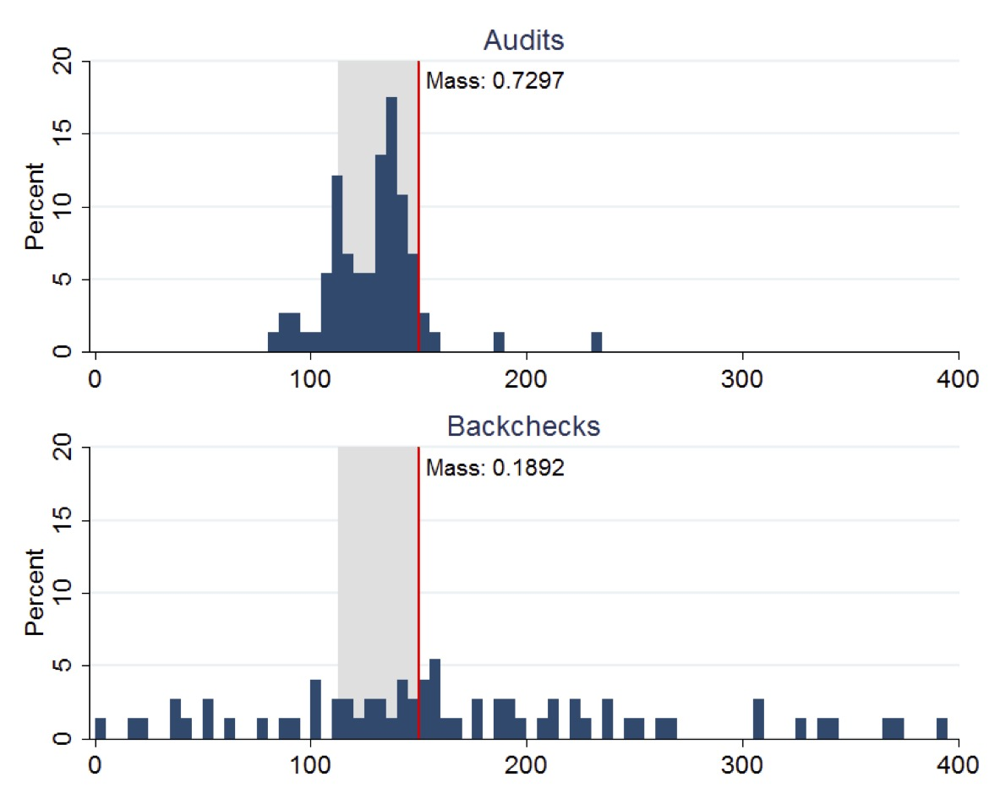
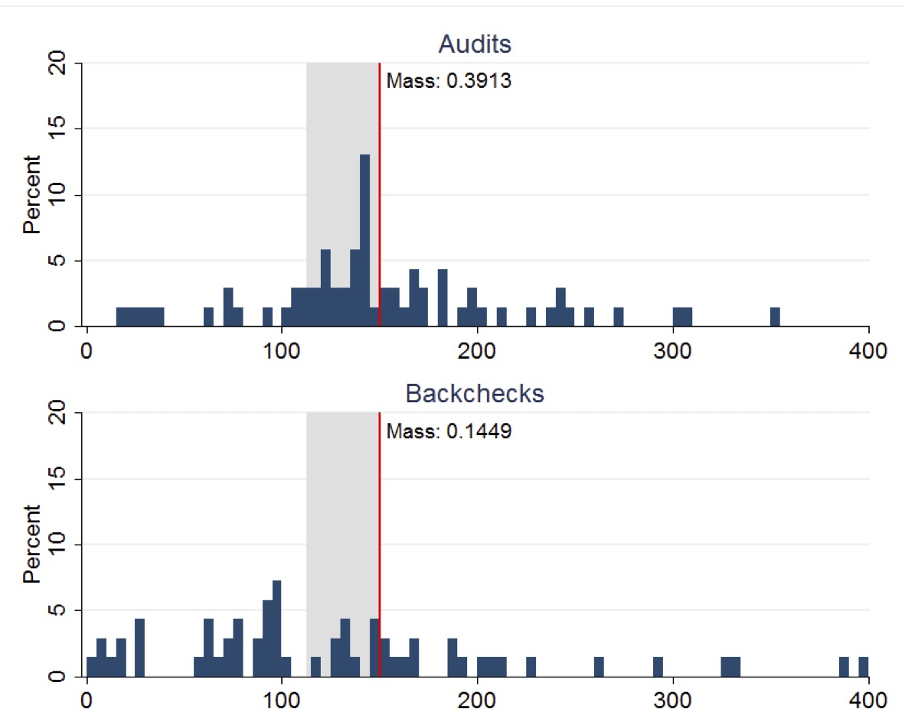

Florence Nightingale (1820-1910) was a heroine of the Crimean War, Patron Saint of Nurses, admirer of Quetelet, and champion of the statistical study of society. She can be called the mother of observational studies. To her, every piece of legislation was an experiment in the laboratory of society deserving study and demanding evaluation. Nightingale recognized the importance of collecting accurate and reliable data to understand healthcare outcomes. She developed standardized methods for collecting data on hospital admissions, deaths, causes of death, and other relevant factors. This systematic data collection allowed for more rigorous and reliable analysis of healthcare practices and their impact on patient outcomes. During the Crimean War (1853-1856), she collected and analyzed data on mortality rates among soldiers. She created statistical diagrams, such as the famous polar area diagram or “coxcomb,” to illustrate the causes of mortality. These visual representations helped to convey complex information in a clear and understandable way. Nightingale’s observations and statistical analyses led her to emphasize the importance of sanitation and hygiene in healthcare settings. She advocated for improvements in cleanliness, ventilation, and sanitation in hospitals, recognizing the impact of these factors on the health and well-being of patients. Beyond the battlefield, Nightingale continued her work in public health. She used statistical evidence to advocate for healthcare reforms and improvements in public health infrastructure. Her efforts played a crucial role in shaping public health policies and practices.
The work of Nightingale would nowadays be called an observational study. An observational study is a research design where researchers observe and collect data on existing groups of people or phenomena without intervening or manipulating any variables. Unlike randomized controlled trials, researchers do not assign participants to different groups and do not directly influence the outcome.
George Washington (1732-1799), on the other hand, had made an enormous fortune in farming, and one of the distinguishing features of his farming practices was the use of what we nowadays call a controlled experiment. He was deeply interested in improving agricultural techniques and conducted numerous experiments at his Mount Vernon estate. One of his most notable experiments involved dividing his land into plots and testing different crop rotations and fertilization methods. Washington recognized the importance of sustainable agriculture and the detrimental effects of monoculture (growing the same crop year after year) on soil fertility. He observed how tobacco, his primary cash crop at the time, depleted the soil nutrients, leading to diminishing yields. To address this issue and improve the long-term health of his land, he began experimenting with crop rotation and soil management techniques.
Washington divided his land into several plots, each receiving different treatments. He experimented with various crop rotations, including wheat-fallow, wheat-rye-fallow, and corn-wheat-fallow. These rotations aimed to prevent soil depletion and promote its natural restoration by planting nitrogen-fixing crops like rye and clover. He also tested different fertilizer applications on various plots. He used manure, compost, and even imported materials like gypsum and marl to improve soil fertility and crop yields.
Washington meticulously documented his experiments in his agricultural diaries. He recorded planting dates, yields, weather conditions, and observations on crop growth and soil health. This meticulous record-keeping allowed him to analyze the effectiveness of different treatments and compare their impact on crop yields and soil quality.
Washington’s experiments yielded valuable insights into sustainable agricultural practices. He discovered that crop rotation and fertilization improved soil health and increased crop yields over time. He abandoned tobacco as his primary crop and shifted towards wheat, which was less soil-depleting and offered a more stable income source.
The historic trades staff at Mount Vernon have recreated Washington’s experiment at the Pioneer Farm, using the same plot layout, crops, and fertilization methods described in his diaries. This allows visitors to learn about his innovative farming techniques and their impact on the land. Figure 16.1 shows the plot layout at the Pioneer Farm.
Figure 16.1: Plot layout at the Mount Vernon’s Pioneer Farm
George Washington’s commitment to experimentation and innovation made him a pioneer in American agriculture. His plot-based experiments demonstrated the effectiveness of crop rotation and soil management in promoting sustainable farming practices. His work continues to inspire farmers today and serves as a valuable resource for understanding agricultural history and best practices.
Later, at the turn of the 20th century, Ronald Fisher (1890-1962) developed the theory of experimental design which allowed for controlled experiments, known as randomized controlled trials (RCT). Fisher’s work laid the foundation for modern experimental design and analysis, providing a rigorous statistical framework for conducting randomized controlled trials. His contributions to experimental design and ANOVA were crucial in establishing the importance of randomized trials in research. He emphasized the importance of randomization and control groups in experimental design, recognizing their crucial role in establishing causal relationships.
The modern randomized controlled trial (RCT) in medicine is most often attributed to Sir Austin Bradford Hill. In 1948, Hill published a landmark paper titled “Streptomycin Treatment of Pulmonary Tuberculosis” in the British Medical Journal, which described the first fully randomized, double-blind clinical trial. This study is considered a turning point in the history of medical research and established the RCT as the gold standard for evaluating the effectiveness of medical treatments.
Randomized trials and observational studies are two distinct approaches to gathering and analyzing data in research studies. Here’s a breakdown of their key differences:
Randomized Trials:
Definition: Participants are randomly assigned to different groups, with one group receiving the intervention being studied and the other group receiving a control intervention or placebo.
Purpose: Determine whether the intervention causes the observed outcome by controlling for other factors that might influence the results.
Strengths: High internal validity, strong causal inference due to randomization, allows for isolating the effect of the intervention, minimizes selection bias through random assignment.
Weaknesses: Can be expensive and time-consuming to conduct, may not be ethical or feasible for all interventions, may not be generalizable to real-world settings.
Observational Data:
Definition: Data is collected on existing groups of people without any intervention being implemented. Researchers observe and analyze the data to identify relationships between variables.
Purpose: Explore potential associations between variables, generate hypotheses for further research, and investigate the natural course of or phenomenon.
Strengths: Often less expensive and time-consuming, can provide insights into real-world settings, can investigate interventions that are not ethically feasible to test in randomized trials.
If you happen to have a choice between randomized trials and observational data (often you do not have that choice), which one should you choose? Here are a few things to consider:
Research question: If the research question aims to establish causation, a randomized trial is generally preferred. However, if the goal is to explore associations or generate hypotheses, observational data may be sufficient.
Available resources: Randomized trials require significant resources, while observational studies can be less expensive and time-consuming.
Ethical considerations: Randomizing individuals to certain interventions may be unethical, making observational data the only option in such cases.
Generalizability: Randomized trials often involve carefully controlled environments, which may limit their generalizability to real-world settings. Observational data can provide insights into how interventions work in real-world situations.
Ultimately, both randomized trials and observational data play crucial roles in research. Combining these two approaches can provide a more comprehensive understanding of the relationship between interventions and outcomes.
Rothamsted t-ratios split-plot designs
Example 16.1 (Russian Election Fraud: A Field Experiment)Enikolopov et al. (2013) show how a field experiment can be used to estimate electoral fraud in Russian parliamentary elections held on December 4, 2011. They randomly assigned independent observers to 156 of 3,164 polling stations in the city of Moscow. The observers were trained by the nongovernmental organization Citizen Observer. The authors compared the vote shares of the incumbent United Russia party at polling stations with and without observers. They found that the presence of observers decreased the reported vote share of United Russia by almost 11 percentage points. This suggests that the extent of the fraud was sufficient to have changed the outcome of the elections.
Code
d =read.csv("../data//PNAS_data_2011.csv")d %>%ggplot(aes(x=er_share, fill=as.factor(s))) +geom_density(alpha=0.6, color="#e9ecef") +labs(fill="") +xlab("") +scale_fill_manual(values=c("#69b3a2", "#404080")) d %>%ggplot(aes(x=turnout_share, fill=as.factor(s))) +geom_density(alpha=0.6, color="#e9ecef") +labs(fill="") +xlab("") +scale_fill_manual(values=c("#69b3a2", "#404080")) d %>%ggplot(aes(x=apple_share, fill=as.factor(s))) +geom_density(alpha=0.6, color="#e9ecef") +labs(fill="") +xlab("") +scale_fill_manual(values=c("#69b3a2", "#404080")) d %>%ggplot(aes(x=sr_share, fill=as.factor(s))) +geom_density(alpha=0.6, color="#e9ecef") +labs(fill="") +xlab("") +scale_fill_manual(values=c("#69b3a2", "#404080")) d %>%ggplot(aes(x=ldpr_share, fill=as.factor(s))) +geom_density(alpha=0.6, color="#e9ecef") +labs(fill="") +xlab("") +scale_fill_manual(values=c("#69b3a2", "#404080")) d %>%ggplot(aes(x=com_share, fill=as.factor(s))) +geom_density(alpha=0.6, color="#e9ecef") +labs(fill="") +xlab("beta") +scale_fill_manual(values=c("#69b3a2", "#404080"))
(a) United Russia Share
(b) Turnout Share
(c) Yabloko Share
(d) Just Russia Share
(e) LDPR Share
(f) Communists Share
Figure 16.2: Histogram comparison of the share of votes received by different parties and the share of those eligible voters who actually voted (turnout)
Figure 16.3: Bar plot comparison of the share of votes received by different parties and the share of those eligible voters who actually voted (turnout)
Figure 16.2 and Figure 16.3 show the results of the experiments and plot histograms of the vote shares. The first histogram compares the share of the ruling United Russia party at the polling stations without observers (treatment = 0) and with observers (treatment = 1). On average, United Russia vote share is decreased by 11 percent when observers were present. The calculations made by Enikolopov et al. (2013) showed that this amount of manipulation was enough to preserve the majority of United Russia in the parliament; it would have lost it without manipulations. While “adding” votes for UR, the results indicate that all other parties were hurt by electoral fraud. The Liberal Democratic Party of Russia (LDPR) was hurt the least and is believed to be the most loyal to the ruling party.
Example 16.2 (Pollution in India) Randomized Controlled Trials (RCTs) have revolutionized economic research and policy-making by providing a rigorous methodology to establish causal relationships between interventions and outcomes. The 2019 Nobel Prize in Economics awarded to Esther Duflo, Abhijit Banerjee, and Michael Kremer recognized their pioneering work in applying experimental approaches to alleviating global poverty and transforming development economics. Their experimental approach has fundamentally changed how economists tackle complex social problems by breaking them down into smaller, more manageable questions that can be answered through carefully designed experiments.
The paper “Truth-telling by Third-party Auditors and the Response of Polluting Firms: Experimental Evidence from India” by Duflo, Greenstone, Pande, and Ryan exemplifies this experimental approach. This two-year field experiment conducted in Gujarat, India, examined how altering the market structure for environmental audits could improve the accuracy of pollution reporting and ultimately reduce industrial pollution. The study demonstrates how RCTs can identify causal mechanisms in complex regulatory environments and provide evidence for effective policy reforms.
The researchers randomly assigned 473 industrial plants to either a treatment or control group. In the treatment group, they implemented a package of reforms to the environmental audit system:
Reform
Description
Random Assignment
Auditors were randomly assigned to plants (rather than plants choosing their auditors)
Central Payment
Auditors were paid from a central pool at a fixed rate
Random Backchecks
Independent technical agencies conducted random backchecks of auditor reports
Incentive Pay
In the second year, incentive pay was provided for accurate reporting
Simply speaking, in the control group the auditors were paid by the plants they audited, which created a conflict of interest that led to systematic misreporting of pollution levels. In contrast, the treatment group had auditors paid from a central pool, reducing this conflict and incentivizing more accurate reporting. The random backchecks served as a deterrent against misreporting, while the incentive pay in the second year further encouraged truthful reporting.
Further, researchers performed backchecks, which are independent verification. Backchecks are follow-up visits conducted by independent technical agencies to verify the accuracy of pollution readings reported by third-party auditors. They serve as a quality control mechanism to monitor whether auditors are truthfully reporting actual pollution levels or manipulating data to show false compliance with regulatory standards.
The figure below (copied from the original paper) displays the distribution of Suspended Particulate Matter (SPM) concentrations measured in boiler-stack samples during the midline survey. Left plot presents the distributions of readings from both audits and backchecks at control plants, while right plot presents the corresponding distributions for treatment plants. A vertical line indicates the regulatory maximum concentration limit of 150 mg/N m3 for SPM, with the region between 75% and 100% of this limit highlighted in gray shading.

Control plants

Treatment plants
This figure clearly demonstrates how the RCT revealed systematic misreporting in the status quo audit system and how the treatment intervention improved reporting accuracy. The stark difference between audit reports and backcheck readings in the control group (Panel A) provides visual evidence of corruption that would have been difficult to establish through observational methods alone.
The experiment yielded three main results. First, regarding status quo corruption, under the existing system, auditors systematically reported plant emissions just below the regulatory standard, even though true emissions were typically higher. Second, the treatment improved reporting accuracy, causing auditors to report pollution levels more truthfully, with treatment auditors reporting pollution readings 50-70% higher than control auditors. Third, plants in the treatment group reduced their actual emissions by 0.21 standard deviations, with reductions concentrated among the highest-polluting plants.
The work of Duflo, Banerjee, Kremer, and their collaborators has fundamentally changed how economists approach questions of causality and policy effectiveness. By adapting experimental methods from medical research to address economic and social questions, they have created a powerful toolkit for identifying effective interventions to address poverty and other global challenges.
The Gujarat environmental audit experiment exemplifies how RCTs can uncover hidden mechanisms—in this case, corruption in regulatory reporting—and test solutions that might not have been evident from observational data alone. The study’s findings demonstrate that reformed incentives for third-party auditors can improve their reporting and make regulation more effective, with tangible benefits for environmental quality.
As RCTs continue to evolve and spread across different domains of economics, they promise to further strengthen the evidence base for policy decisions, ultimately leading to more effective interventions and better outcomes for society.
16.1 The Question of Causation
Randomized controlled trials (RCTs) and field experiments are considered the gold standard for establishing causation because they allow researchers to isolate the effect of a specific intervention or treatment from other confounding factors. The main principle of RCTs and field experiments is randomization, which ensures that the treatment and control groups are similar in all respects except for the treatment. This allows researchers to attribute any differences in outcomes between the two groups to the treatment, rather than to other factors. Randomization helps to control for confounding variables, which are factors that are associated with both the treatment and the outcome variable. By randomly assigning participants to groups, researchers can ensure that any confounding variables are evenly distributed between the groups. The control group serves as a baseline for comparison. It is a group that is not exposed to the treatment or intervention being studied. By comparing the outcomes of the treatment group and the control group, researchers can isolate the effect of the treatment. Any differences in the outcomes between the two groups can be attributed to the treatment, rather than to other factors.
For many years, the main areas of application of randomized trials were medicine and agriculture. In medicine, randomized trials are used to test the effectiveness of new drugs and treatments. In agriculture, randomized trials are used to test the effectiveness of new fertilizers, pesticides, and other agricultural inputs. However, with the rise of the internet, randomized trials have become increasingly popular for testing the effectiveness of online interventions, such as email campaigns, website designs, and social media ads. When applied to user experience and marketing, randomized trials are often called A/B tests. The idea of A/B testing is the same: randomly assign users to different versions of a website or an email campaign and compare the outcomes. However, the level or “rigor” of designing the experiment is often lower than in medicine or agriculture. There are fewer strict rules about ethics, randomization, sample size, and statistical analysis. For example, randomization is sometimes completely ignored in A/B testing. Instead of assigning users randomly to groups, they are divided into groups based on factors like time of day, location, or browsing history. This can introduce bias into the results, as the groups may not be comparable. As a result, A/B testing is cheap and quick to conduct, as it can be done online without the need for IRB approval or recruitment of participants. Participants most of the time do not even know that they are participating in an A/B experiment. Furthermore, A/B testing is primarily focused on measuring the comparative performance of variations without necessarily establishing a causal relationship. It answers questions like, “Which version of our web page leads to more clicks?”
Yet another area where RCTs are becoming popular is economic studies. For example, randomized trials are used to test the effectiveness of educational interventions, such as tutoring programs and online courses. In recent years, randomized trials have been used to study a wide range of other phenomena, including education, economics, and public policy.
While RCTs and field experiments are powerful tools for establishing causation, they are not always feasible or ethical. In some cases, observational studies may be the best way to study a particular phenomenon. However, even in observational studies, researchers can use techniques such as matching and instrumental variables to try to control for confounding variables. It is important to remember that even RCTs and field experiments cannot definitively prove causation. However, they provide the strongest evidence possible for a causal relationship between a treatment or intervention and an outcome.
Diane Lambert was the original statistician who promoted the ideas of proper statistical usage of observational data among internet companies. She has presented on how to detect selection bias in data streams drawn from transaction logs, ad-systems, etc.; diagnostics to judge when bias overwhelms signal; and practical fixes such as propensity-score weighting, doubly-robust estimators, post-stratification, and simulation so that credible causal conclusions can still be drawn from field/observational data. For example, at JSM 2011 (Miami) she co-authored the session “The Effectiveness of Display Ads,” contrasting large-scale field experiments with observational analyses of ad-click logs.
The advent of digital data has fundamentally transformed the practice of statistics, shifting the field from a discipline focused on small, carefully collected samples to one that must grapple with massive, often messy datasets generated as byproducts of digital systems. In the pre-digital era, statisticians worked primarily with structured, purposefully collected data through surveys, experiments, and clinical trials, where the sample size was a critical constraint and every observation was expensive to obtain. Today, organizations routinely collect terabytes of data from web traffic, sensor networks, financial transactions, and social media interactions, creating what some have called a “data deluge.” This shift has necessitated new statistical approaches that can handle high-dimensional data, complex dependencies, and the computational challenges of scale. Machine learning algorithms, once considered separate from traditional statistics, have become essential tools for extracting patterns from these vast datasets. However, this transition has also introduced new challenges: the need to distinguish correlation from causation in observational data, the importance of addressing selection bias in non-random samples, and the ethical considerations of privacy and algorithmic fairness. The field has evolved to embrace both the opportunities presented by big data—such as the ability to detect subtle patterns and make real-time predictions—and the responsibility to develop robust methods that can provide reliable insights despite the inherent noise and complexity of digital data sources.
Markets give signals in the form of betting odds, e.g., Polymarket uses collective thought to produce a signal. It often happens that the collective thought outperforms the best experts.
16.2 BART For Causal Inference
Estimating the causal effect of an intervention, such as a new drug, a marketing campaign, or a public policy, is a central goal across science and industry. While the gold standard for causal inference is the Randomized Controlled Trial (RCT), it is often infeasible, unethical, or too expensive to conduct. Researchers must therefore turn to observational data, where the assignment of treatment is not controlled by the investigator. This introduces a fundamental challenge: individuals who receive the treatment may be systematically different from those who do not, a problem known as confounding. Separating the true effect of the treatment from these pre-existing differences is the primary task of causal inference from observational data.
To formalize causal questions, we rely on the Rubin Causal Model (RCM), also known as the potential outcomes framework. For a binary treatment \(Z\) (where \(Z_i=1\) if individual \(i\) receives the treatment and \(Z_i=0\) otherwise), we posit that each individual \(i\) has two potential outcomes: * \(Y_i(1)\): The outcome that would be observed if individual \(i\) were exposed to the treatment. * \(Y_i(0)\): The outcome that would be observed if individual \(i\) were exposed to the control (no treatment).
This framework leads directly to what Holland (1986) termed the “fundamental problem of causal inference”: for any given individual, we can only ever observe one of these two potential outcomes. The outcome we do not see is the counterfactual. Causal inference can thus be viewed as a missing data problem, where the goal is to estimate the values of the unobserved potential outcomes.
From this foundation, we can define several key causal quantities, or estimands:
Individual Treatment Effect (ITE): The effect for a single individual, defined as \[\tau_i = Y_i(1) - Y_i(0).\] This is typically unobservable.
Average Treatment Effect (ATE): The average effect across the entire population, \[\tau_{ATE} = E[Y(1) - Y(0)].\] This is often the primary estimand of interest for broad policy questions.
Average Treatment Effect on the Treated (ATT): The average effect for those who actually received the treatment, \[\tau_{ATT} = E[Y(1) - Y(0) | Z=1].\]
Conditional Average Treatment Effect (CATE): The average effect for a subpopulation defined by a set of covariates \(X=x\), \[\tau(x) = E[Y(1) - Y(0) | X=x].\] Understanding the CATE allows for the exploration of treatment effect heterogeneity.
To estimate these causal estimands from observational data, we must rely on a set of critical, untestable assumptions that connect the observed data to the unobserved potential outcomes. These are known as identification assumptions.
Stable Unit Treatment Value Assumption (SUTVA): This assumption has two parts. First, it assumes there is no interference between units, meaning one individual’s treatment status does not affect another’s outcome. Second, it assumes there are no hidden variations of the treatment; the treatment assigned to one individual is the same as the treatment assigned to any other.
Ignorability (or Unconfoundedness): This is the most crucial assumption. It states that, conditional on a set of observed pre-treatment covariates \(X\), treatment assignment \(Z\) is independent of the potential outcomes: \[(Y(0), Y(1)) \perp Z | X\]. In essence, it assumes that we have measured all the common causes of both treatment selection and the outcome. If this holds, then within any stratum defined by the covariates \(X\), the treatment assignment is “as-if” random.
Positivity (or Overlap/Common Support): This assumption requires that for any set of covariate values \(x\) present in the population, there is a non-zero probability of being in either the treatment or the control group: \(0 < P(Z=1 | X=x) < 1\). This ensures that we can find both treated and control individuals with similar characteristics, making comparison meaningful and avoiding extrapolation to regions with no data.
To demonstrate the application of Bayesian methods to this challenge, we use the famous Lalonde dataset, a canonical benchmark in the causal inference literature. The dataset addresses a real-world policy question: evaluating the effectiveness of the National Supported Work (NSW) Demonstration, a federally funded job training program implemented in the US from 1975-1979. The program was designed to help individuals facing significant social and economic barriers (e.g., former drug addicts, ex-convicts, high school dropouts) improve their labor market prospects. The treatment (\(treat\)) is participation in this program, and the primary outcome (\(re78\)) is the individual’s real earnings in 1978, after the program.
The historical importance of this dataset stems from Robert Lalonde’s 1986 paper, which delivered a powerful critique of the non-experimental methods used at the time. Lalonde started with data from an actual RCT, which provided an unbiased estimate of the program’s effect. He then took the treated group from the experiment but replaced the experimental control group with a non-experimental comparison group drawn from large public surveys—the Panel Study of Income Dynamics (PSID) and the Current Population Survey (CPS). He showed that the standard econometric models of the era failed to replicate the experimental benchmark when applied to this new, confounded dataset, casting serious doubt on their reliability for policy evaluation. Our task is to see if a modern, flexible Bayesian method—Bayesian Additive Regression Trees (BART)—can succeed where these earlier methods failed.
The challenge posed by the Lalonde dataset becomes immediately apparent when we examine the pre-treatment characteristics of the treated group versus the non-experimental control group. A naive comparison of their 1978 earnings would be deeply misleading because the groups were profoundly different before the program even began. Table 16.1 illustrates this imbalance for key covariates, including age, education, race, marital status, and earnings in the years prior to the intervention (1974 and 1975).
The Standardized Mean Difference (SMD) provides a scale-free measure of the difference between the group means. A common rule of thumb suggests that an absolute SMD greater than 0.1 indicates a potentially meaningful imbalance. As the table shows, the groups differ substantially on nearly every measured characteristic. The treated individuals were younger, less educated, more likely to be from minority groups, and had drastically lower earnings in the years before the program. This severe selection bias is precisely what makes the Lalonde dataset such a difficult and important test case for causal inference methods. Any credible method must be able to adjust for these vast pre-existing differences to isolate the true causal effect of the job training program.
Table 16.1: Covariate Balance in the Lalonde Non-Experimental Dataset. Note: Data corresponds to the widely used Dehejia and Wahba (1999) sample of the Lalonde dataset. Standardized Mean Difference is calculated as the difference in means divided by the pooled standard deviation.
Covariate
Treated Mean
Control Mean
Std. Mean Diff.
Age (years)
25.82
28.04
-0.31
Education (years)
10.35
10.23
0.06
Black (indicator)
0.84
0.20
1.84
Hispanic (indicator)
0.06
0.14
-0.32
Married (indicator)
0.19
0.51
-0.81
No Degree (indicator)
0.71
0.60
0.25
Earnings 1974
2095.57
5630.71
-0.63
Earnings 1975
1532.06
5205.52
-0.65
To address the challenge of confounding, we need a method that can flexibly model the relationship between the outcome, the treatment, and the many covariates shown to be imbalanced. Bayesian Additive Regression Trees (BART) is a powerful non-parametric machine learning algorithm that is exceptionally well-suited for this task. It combines the predictive power of ensemble methods with a rigorous Bayesian framework for regularization and uncertainty quantification.
At its core, BART models the expected value of an outcome \(Y\) as a sum of many individual regression trees. For a set of predictors \(x\), the model is:
Here, \(m\) is the number of trees in the ensemble (typically around 200), and each function \(g(x; T_j, M_j)\) represents a single regression tree. The structure of the tree is denoted by \(T_j\), and \(M_j\) is the set of parameter values in its terminal nodes (or leaves).
Crucially, each individual tree is designed to be a “weak learner”. It is kept shallow and simple, meaning it explains only a small fraction of the variation in the outcome. The final, powerful prediction comes from summing up the contributions of all these simple components. This sum-of-trees structure allows BART to automatically capture very complex relationships, including high-order interactions and non-linearities, without the user needing to specify them in advance. For example, an interaction between age and education is implicitly modeled if a tree splits on education within a branch that has already been split on age. This flexibility is a major advantage in observational studies where the true functional form of the relationship between the outcome and the confounders is unknown.
In most machine learning algorithms, overfitting is controlled through techniques like cross-validation or complexity penalties. BART, being a fully Bayesian method, achieves this through a carefully specified set of regularization priors. These priors are designed to keep each tree simple and prevent any single tree from dominating the overall fit.
The key priors are:
Prior on Tree Structure: This prior strongly encourages shallow trees. It is defined by a rule governing the probability that a node at a certain depth \(d\) will be split further. This probability is typically modeled as \[p(T_j) = \alpha(1+d)^{-\beta},\] where \(\alpha \in (0,1)\) and \(\beta \ge 0\) are hyperparameters. Setting \(\beta\) to a value like 2 ensures that the probability of splitting decreases rapidly with depth, keeping the trees small.
Prior on Terminal Node Parameters: After the response variable \(Y\) is centered and scaled, the values \(\mu_{jk}\) in the terminal nodes of each tree are given a Normal prior, \[
\mu_{jk} \sim N(0, \sigma_{\mu}^2).
\] This prior shrinks the predictions within each leaf towards zero. Because the final prediction is a sum over \(m\) trees, this shrinkage ensures that the contribution of each individual tree is small.
Prior on Error Variance: The residual variance \(\sigma^2\) is typically given a conjugate Inverse-Gamma prior. This prior is usually chosen to be weakly informative, allowing the data to dominate the posterior estimate of the noise level, but it still constrains the variance to be reasonable.
Together, these priors act as a sophisticated regularization mechanism that allows BART to fit complex functions while being highly resistant to overfitting.
BART models are fit using a Markov chain Monte Carlo (MCMC) algorithm, specifically a form of Gibbs sampler known as Bayesian backfitting. The algorithm does not find a single “best” model. Instead, it generates thousands of samples from the joint posterior distribution of all model parameters: \(p(T_1,\ldots,T_m, M_1,\ldots,M_m, \sigma | Y, X)\).
The fitting process works iteratively :
Initialize all \(m\) trees and \(\sigma\).
For each tree \(j\) from 1 to \(m\):
Calculate the “partial residual” by subtracting the predictions of all other trees from the outcome: \[R_j = Y - \sum_{k \neq j} g(x; T_k, M_k)\].
Draw a new tree structure \(T_j\) and its leaf parameters \(M_j\) from their posterior distribution conditional on this partial residual, \[p(T_j, M_j | R_j, \sigma).\]
After iterating through all trees, draw a new value for \(\sigma\) from its posterior conditional on the current residuals.
Repeat steps 2 and 3 for thousands of iterations.
The output of this process is not one set of trees, but a collection of (e.g., 5000) sets of trees, where each set represents a plausible regression function drawn from the posterior distribution. This collection of draws is the key to quantifying uncertainty in a Bayesian way.
The power of BART for causal inference lies in how it leverages the full posterior distribution to estimate counterfactuals. The strategy aligns perfectly with the Bayesian view of causal inference as a missing data problem, as articulated by Rubin (1978).
The standard approach for causal inference with BART is to model the outcome \(Y\) as a function of both the covariates \(X\) and the treatment indicator \(Z\). The model learns a single, flexible response surface:
\[E[Y | X, Z] = f(X, Z)\]
Here, the treatment \(Z\) is included as if it were “just another covariate” in the set of predictors fed to the BART algorithm. The model is free to discover how the effect of \(Z\) varies with \(X\) through the tree-splitting process. The Conditional Average Treatment Effect (CATE) is then simply the difference in the predictions from this learned function:
\[\tau(x) = f(x, Z=1) - f(x, Z=0)\]
The core of the estimation process is a predictive step that is repeated for each draw from the MCMC sampler. Suppose the MCMC algorithm has produced \(S\) posterior draws of the function \(f\). For each draw \(s = 1,\ldots, S\):
We take the full dataset of \(n\) individuals with their observed covariates \(X\).
We create two hypothetical, or counterfactual, datasets:
Treated World: The observed covariates \(X\) for all \(n\) individuals, but with the treatment indicator set to \(Z=1\) for everyone.
Control World: The observed covariates \(X\) for all \(n\) individuals, but with the treatment indicator set to \(Z=0\) for everyone.
Using the fitted BART model corresponding to posterior draw \(s\) (i.e., \(f^{(s)}\)), we predict the outcome for every individual under both scenarios. This gives us a full set of posterior predictive draws for the potential outcomes: \(\tilde{Y}_i(1)^{(s)}\) and \(\tilde{Y}_i(0)^{(s)}\) for each individual \(i\).
This process is a direct implementation of the missing data analogy. For an individual \(i\) who was actually treated (\(Z_i=1\)), their observed outcome \(Y_i\) is their potential outcome \(Y_i(1)\). The BART model provides a posterior predictive draw for their missing counterfactual outcome, \(\tilde{Y}_i(0)^{(s)}\). Conversely, for a control subject, we use the model to predict their missing \(\tilde{Y}_i(1)^{(s)}\).
Once we have the posterior draws of the potential outcomes for every individual at each MCMC iteration, we can compute a posterior draw for any causal estimand of interest. For example, at each iteration \(s\):
ATE draw: \[\tau_{ATE}^{(s)} = \frac{1}{n} \sum_{i=1}^{n} \tau_i^{(s)}\]
By collecting these values across all \(S\) MCMC iterations, we obtain \[\{\tau_{ATE}^{(1)}, \tau_{ATE}^{(2)},\ldots, \tau_{ATE}^{(S)}\}.\] This set is a Monte Carlo approximation of the entire posterior distribution of the Average Treatment Effect.
This is a profoundly powerful result. Instead of a single point estimate and a standard error, the Bayesian approach yields a full probability distribution for the unknown causal effect. From this posterior distribution, we can easily calculate a posterior mean (our best point estimate) and a 95% credible interval. Unlike a frequentist confidence interval, the Bayesian credible interval has a direct and intuitive probabilistic interpretation: given our data and model, there is a 95% probability that the true value of the ATE lies within this range. This propagation of uncertainty from the model parameters all the way to the final causal estimate is a hallmark of the Bayesian approach.
We now apply this framework to the Lalonde dataset to estimate the causal effect of the NSW job training program on 1978 earnings.
The analysis is streamlined by using the bartCause package in R, which is specifically designed for causal inference with BART. The package provides a wrapper around the core dbarts implementation, simplifying the process of fitting the model and generating counterfactuals. A typical function call would look like this:
# Load the package and datalibrary(bartCause)data(lalonde)# Define confoundersconfounders <-c('age', 'educ', 'black', 'hisp', 'married', 'nodegr', 're74', 're75')# Fit the BART modelfit <-bartc(response = lalonde$re78,treatment = lalonde$treat,confounders = lalonde[, confounders],estimand ="ate",commonSup.rule ="sd"# Rule to handle poor overlap)
In this call, we specify the outcome (re78), the binary treatment (treat), and the matrix of pre-treatment confounders. We set estimand = ate to target the Average Treatment Effect
Before interpreting the causal estimates, it is essential to perform MCMC diagnostics to ensure the algorithm has converged to a stable posterior distribution. The bartCause package provides plotting functions for this purpose. Trace plots for key parameters, such as the posterior draws of the ATE and the residual standard deviation (\(\sigma\)), should be examined. These plots should show the chains mixing well and exploring a consistent region of the parameter space, without long-term drifts or stuck periods, indicating that the sampler has converged.
The primary result can be obtained by calling summary(fit). This provides the posterior mean of the ATE, which serves as our point estimate, along with a 95% credible interval. For a richer view, we can plot the entire posterior distribution of the ATE, which visualizes our uncertainty about the treatment effect.
The true power of this result is seen when placed in the context of other estimates, as shown in Table 16.2. The naive difference in means between the treated and control groups in the non-experimental data is large and negative, a direct consequence of the severe confounding. The experimental benchmark from the original RCT for this subset of treated individuals is an earnings gain of approximately $886. The BART estimate, after adjusting for the observed confounders, is remarkably close to this benchmark. This result demonstrates that a flexible, non-parametric Bayesian model like BART can successfully overcome the severe selection bias that plagued earlier econometric methods, effectively “solving” the problem posed by
Table 16.2: Comparison of ATE Estimates for the NSW Program. Note: Estimates are for the non-experimental Lalonde sample (treated units from NSW, control units from PSID). The experimental benchmark is the difference-in-means estimate from the randomized trial for the same treated units. Uncertainty for BART is the posterior standard deviation
Method
ATE Estimate
Uncertainty (Std. Dev. / Interval)
Experimental Benchmark
886.3
-277.37
Naive Difference-in-Means
-8492.24
-633.91
Propensity Score Matching
1079.13
-158.59
Double Machine Learning
370.94
-394.68
Causal BART
818.79
-184.46
While the ATE provides a useful summary, it can mask important variations in how the treatment affects different people. A policy might be beneficial on average but ineffective or even harmful for certain subgroups. A key advantage of BART is its ability to move beyond the average and explore this Heterogeneous Treatment Effect (HTE), which is critical for developing more targeted and effective policies.
Estimating HTE allows us to answer questions like: “For whom does this program work best?” or “Are there individuals for whom the program is detrimental?” In settings with limited resources, this information is vital for allocating the intervention to those most likely to benefit. The flexibility of BART, which does not assume a constant treatment effect, makes it an ideal tool for this task.
Because BART provides a posterior predictive distribution of potential outcomes for every individual in the dataset, we can estimate an Individual Conditional Average Treatment Effect (ICATE) for each person. By plotting a histogram of the posterior means of these ICATEs, we can visualize the distribution of effects across the sample. This reveals whether the effect is consistent for everyone or if there is substantial variation, with some individuals benefiting much more than others.
To understand what drives this heterogeneity, we can examine how the estimated CATE varies as a function of key pre-treatment covariates. These relationships are often visualized using partial dependence plots. For the Lalonde data, such analyses have revealed that the effect of the job training program is not constant but varies non-linearly with characteristics like age and pre-treatment income (re74). For instance, the program’s benefit might increase with age up to a certain point and then decline, or it might be most effective for individuals with low-to-moderate prior earnings but less so for those with very low or higher earnings. These are nuanced, data-driven insights that would be completely missed by a standard linear regression model that only estimates a single average effect.
A subtle but important issue can arise when using flexible regularized models like BART for causal inference in the presence of strong confounding, as is the case here. The regularization priors, which are designed to prevent overfitting, can shrink the estimated effects of the confounders towards zero. Because the treatment Z is highly correlated with these confounders, the model may mistakenly attribute some of the effect of the confounders to the treatment, leading to a bias known as Regularization-Induced Confounding (RIC).
A powerful solution, proposed by Hahn, Murray, and Carvalho (2020), is to first estimate the propensity score, \(\pi(x) = P(Z=1|X)\), which is the probability of receiving treatment given the covariates X. This score serves as a one-dimensional summary of all confounding information. This estimated propensity score is then included as an additional predictor in the BART outcome model. By providing this confounding summary directly to the model, we help the BART algorithm differentiate between the prognostic effects of the covariates (captured by \(\pi(x)\)) and the causal effect of the treatment Z, thereby mitigating RIC. This “ps-BART” approach is considered state-of-the-art and is easily implemented in the bartCause package by setting the argument p.scoreAsCovariate = TRUE
BART versus Propensity Score Matching (PSM)
BART is one of several methods for causal inference from observational data. It is instructive to compare its philosophy with that of another widely used technique: Propensity Score Matching (PSM). BART and PSM represent two different philosophies for tackling confounding. Propensity Score Matching (PSM): This approach focuses on the design of the study. The goal is to use the observed data to construct a new sample in which the treatment and control groups are balanced on their observed covariates, thereby mimicking the properties of an RCT. The propensity score is the central tool used to achieve this balance. The analysis of the outcome is then performed on this newly created, “balanced” dataset.
BART focuses on the analysis stage. The goal is to build a highly flexible and accurate predictive model for the outcome that explicitly includes the treatment and confounders, \(E[Y|X,Z]\). It uses the full dataset and relies on the model’s ability to correctly adjust for the confounding variables to isolate the causal effect.
Each approach has its own set of advantages and disadvantages. PSM is often praised for its transparency; one can assess the quality of the covariate balance achieved by the matching procedure before ever looking at the outcome variable, reducing the risk of “p-hacking” or specification searching. However, PSM can be inefficient, as it often requires discarding a significant portion of the control group that does not have good matches in the treated group (i.e., poor overlap). It can also suffer from residual confounding if the matches are not sufficiently close. BART, on the other hand, is highly efficient as it uses all available data. Its main strengths are its flexibility in capturing unknown functional forms and interactions, its ability to easily estimate heterogeneous effects, and its principled framework for uncertainty quantification. Its primary weakness is that it can be perceived as a “black box” if not diagnosed carefully. Its validity, like all modeling approaches, depends on the untestable ignorability assumption, and as discussed, it can be susceptible to regularization-induced confounding if not applied with care.
In modern practice, the line between these two philosophies is blurring. It is now common to see them used in conjunction. For example, many practitioners use flexible machine learning models, including BART itself, to estimate the propensity scores used for matching or weighting, which can improve the quality of the covariate balance over simpler logistic regression models. Conversely, the state-of-the-art application of BART for causal inference (ps-BART) incorporates the propensity score directly into the outcome model. This convergence reflects a mature understanding that both balancing the data structure and flexibly modeling the outcome are complementary and powerful tools for robust causal inference.
Conceptual Comparison of BART and Propensity Score Matching
Feature
Propensity Score Matching (PSM)
Bayesian Additive Regression Trees (BART)
Primary Goal
Create balanced treatment/control groups (Design)
Flexibly model the outcome-covariate relationship (Analysis)
Use of Data
Often discards unmatched units, reducing sample size
Uses all available data
Confounding Control
Achieved by balancing covariates via matching/weighting
Achieved by conditioning on covariates in a flexible model
Key Assumption
Correct specification of the propensity score model
Correct specification of the outcome model (though BART is very flexible)
Treatment Effect
Primarily estimates ATT; ATE can be harder to estimate
Easily estimates ATE, ATT, and CATE/HTE
Uncertainty
Often requires bootstrapping for standard errors
Provides full posterior distributions and credible intervals naturally
Flexibility
Limited by the PS model; main effect is assumed constant after matching
Highly flexible; automatically models non-linearities and interactions
This example shows that BART, a flexible non-parametric method, can successfully adjust for severe confounding and recover a causal estimate that is remarkably close to the experimental benchmark, a feat that eluded many of the methods available when Lalonde first published his critique. It is crucial to remember that BART is not a panacea. Its validity, like that of any non-experimental method, rests on the untestable assumption of ignorability—that we have measured and adjusted for all relevant confounding variables. However, given that assumption, BART offers a suite of powerful advantages that make it a top-tier method in the modern causal inference landscape, a status confirmed by its consistent high performance in data analysis competitions. For the Bayesian statistician, the key takeaways are threefold:
Takeaway
Description
Philosophical Coherence
BART provides a method for causal inference that is deeply integrated with Bayesian principles. It seamlessly frames the estimation of causal effects as a posterior predictive imputation of missing potential outcomes, propagating all sources of parameter uncertainty into the final result.
Robustness to Misspecification
By using a flexible sum-of-trees ensemble, BART avoids the need for strong parametric assumptions about the functional form of the relationship between the covariates and the outcome. This provides robust protection against model misspecification bias, which is a major concern in observational studies where these relationships are complex and unknown.
Richness of Inference
BART naturally yields a full posterior distribution for any causal estimand of interest. This allows for a more complete and intuitive quantification of uncertainty through credible intervals and facilitates the exploration of heterogeneous treatment effects, moving the analysis from a single average number to a nuanced understanding of for whom an intervention works.
Enikolopov, Ruben, Vasily Korovkin, Maria Petrova, Konstantin Sonin, and Alexei Zakharov. 2013. “Field Experiment Estimate of Electoral Fraud in Russian Parliamentary Elections.”Proceedings of the National Academy of Sciences 110 (2): 448–52.
Hahn, P. Richard, Jared S. Murray, and Carlos M. Carvalho. 2020. “Bayesian Regression Tree Models for Causal Inference: Regularization, Confounding, and Heterogeneous Effects (with Discussion).”Bayesian Analysis 15 (3): 965–1056.